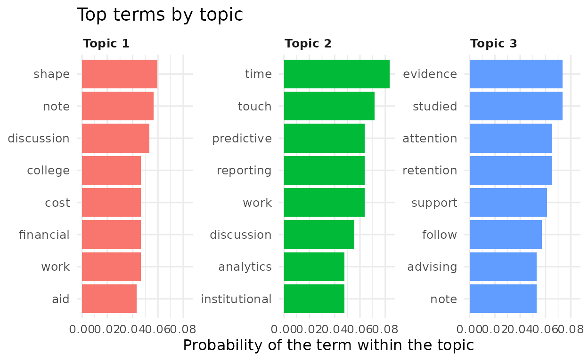
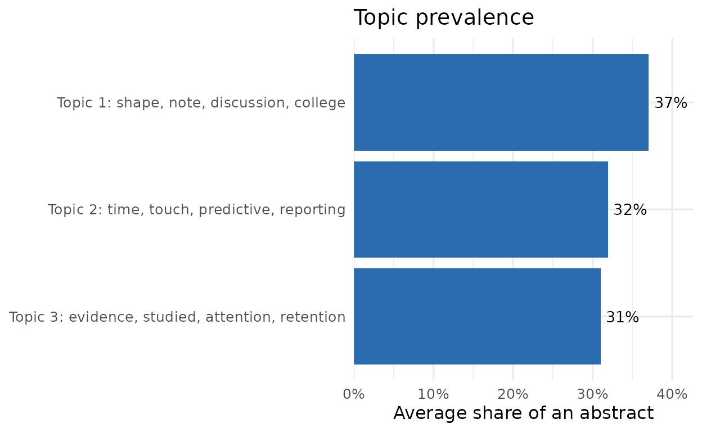
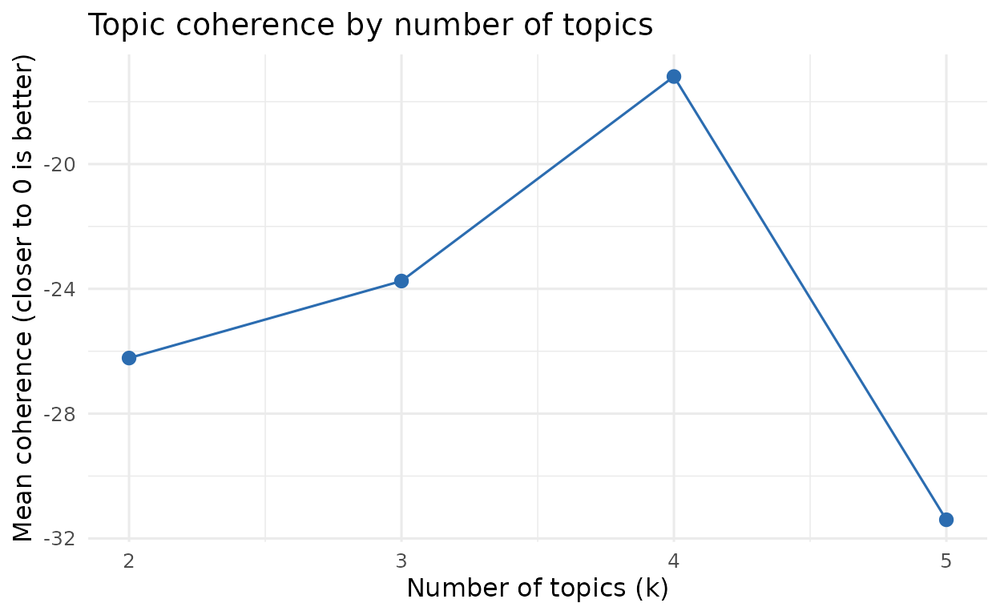
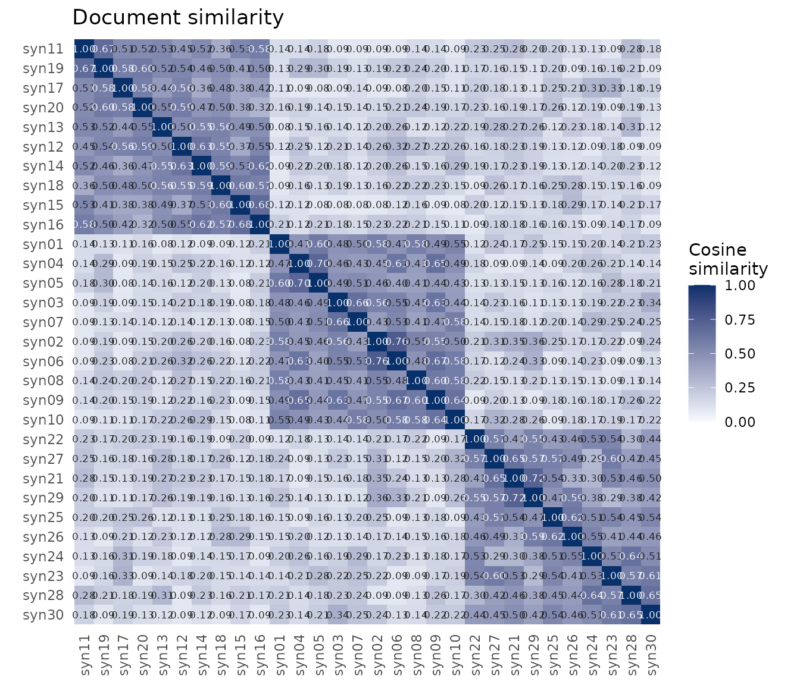
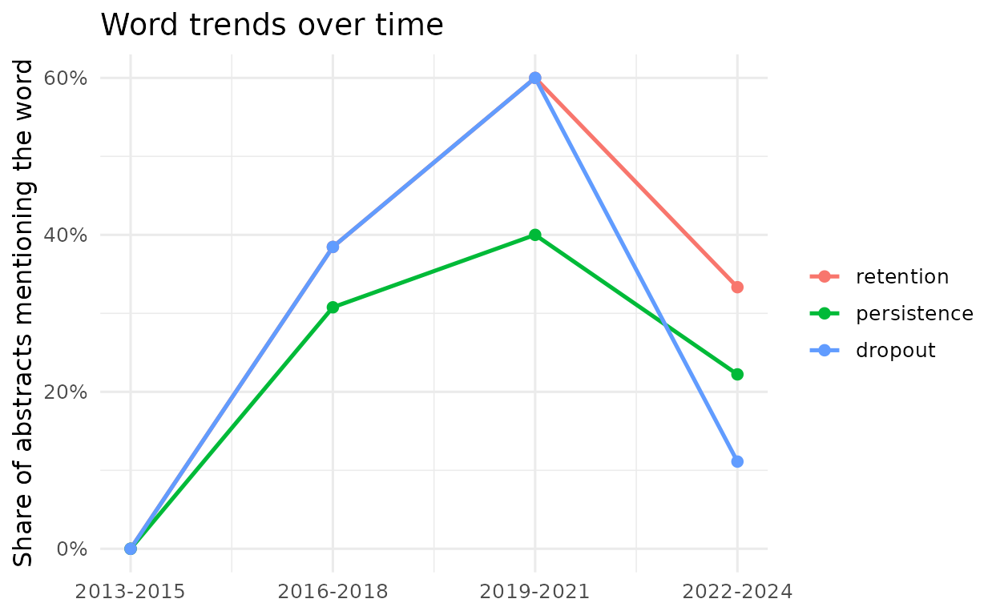
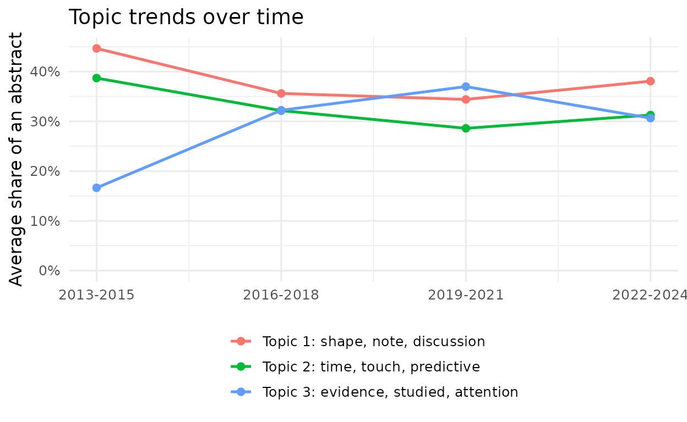

Introduction
Bibliometric software often assumes that you can export records from a subscription database such as Scopus or Web of Science. Many students, institutional researchers, and small teams cannot. What they do have is a reference-manager library (RefWorks, or anything that exports RIS), a set of Google Scholar searches, or a BibTeX file collected by hand.
citelens is a workaround for that situation. It takes
the records you can get and turns them into analysis-ready data
frames, then runs text analytics on the abstracts. It does four
things:
- Converts RefWorks and RIS exports, and saved Google Scholar results pages, to BibTeX.
- Reads BibTeX into a data frame or an Excel workbook.
- Fills in missing abstracts by looking them up in OpenAlex, a free scholarly index.
- Analyzes abstracts: topic modeling (latent Dirichlet allocation), cosine document similarity with duplicate finding, and trends over time.
The parsing and the computationally heavy steps are written in C++
through Rcpp, so the package stays fast on large
libraries.
citelens does not try to replace general-purpose tools.
If you can already export from a major database, or you want a full
science-mapping toolkit (co-citation networks, collaboration maps, and
so on), packages such as bibliometrix and
openalexR are built for that. citelens is for
the earlier steps of getting a messy library into shape, and for
abstract-level text analysis that does not need a paid database.
Installation
install.packages("citelens")The C++ code is compiled when you install, so you need a C++
compiler: the Xcode command line tools on macOS, Rtools on Windows, or
build-essential (or your distribution’s equivalent) on
Linux.
Sample data
The package ships with small sample files so that every example below can be run as is.
list.files(system.file("extdata", package = "citelens"))
#> [1] "sample_abstracts.bib" "sample_refworks.ris" "sample_refworks.txt"
#> [4] "sample.bib"-
sample_refworks.risandsample_refworks.txt: a few references in RIS and RefWorks Tagged Format. -
sample.bib: the same references as BibTeX. -
sample_abstracts.bib: 30 synthetic abstracts for trying the text analytics. The text is made up, so the results are for illustration only.
Converting a RefWorks or RIS export
convert_refworks() reads a RefWorks export and returns
BibTeX entries. It accepts both RefWorks Tagged Format
(lines such as RT, A1, T1) and
RIS (lines such as TY -,
AU -), and detects which one you supplied.
ris <- system.file("extdata", "sample_refworks.ris", package = "citelens")
entries <- convert_refworks(ris)
cat(entries[1])
#> @article{tinto2006research,
#> author = {Tinto, Vincent},
#> title = {{Research and practice of student retention: What next?}},
#> journal = {Journal of College Student Retention: Research, Theory \& Practice},
#> year = 2006,
#> volume = {8},
#> number = {1},
#> pages = {1--19},
#> issn = {1521-0251},
#> doi = {10.2190/4NWK-STAC-2PLH-PJ3D},
#> url = {https://example.org/tinto2006},
#> keywords = {retention, persistence},
#> abstract = {This article reviews the last forty years of research on student retention and argues that institutions should focus on persistence in the classroom.}
#> }Citation keys are built from the first author, the year, and the
first meaningful word of the title (for example
tinto2006research). A letter is added when two keys would
otherwise collide. Reference types are mapped to BibTeX types (journal
article to article, book chapter to
incollection, thesis to phdthesis, and so on);
anything unrecognized becomes misc.
To write a .bib file, give
convert_refworks() an output path:
bib_file <- tempfile(fileext = ".bib")
convert_refworks(ris, bib_file)
#> Converted 4 record(s) -> /tmp/RtmpFiksI8/file1a2b55f349ce.bib
file.exists(bib_file)
#> [1] TRUEFrom RefWorks straight to Excel
If a spreadsheet is what you need, refworks_to_xlsx()
does the whole job in one step. It can also keep the BibTeX copy.
xlsx_file <- tempfile(fileext = ".xlsx")
refs <- refworks_to_xlsx(ris, xlsx_file, bib = tempfile(fileext = ".bib"))
#> Converted 4 record(s) -> /tmp/RtmpFiksI8/file1a2b45330a93.bib
#> Wrote 4 entries to /tmp/RtmpFiksI8/file1a2b1482b936.xlsx
file.exists(xlsx_file)
#> [1] TRUEThe data frame is returned invisibly, so you can keep working with it in R.
Reading BibTeX into a data frame
bib_to_df() reads any BibTeX file, whether it came from
convert_refworks(), Google Scholar’s Cite >
BibTeX option, or another tool.
refs <- bib_to_df(system.file("extdata", "sample.bib", package = "citelens"))
refs[, c("bibtype", "bibkey", "year", "title")]
#> bibtype bibkey year
#> 1 article tinto2006 2006
#> 2 book bailey2015 2015
#> 3 inproceedings nobody2020 2020
#> title
#> 1 Research and practice of student retention: What next?
#> 2 Redesigning America's Community Colleges
#> 3 A title with a nested brace groupThe result has one row per entry. bibtype and
bibkey come first, followed by one column for every BibTeX
field found in the file. Fields an entry does not have are
NA, and every column is character, so convert
year with as.integer() if you need to do
arithmetic on it.
By default the values are cleaned: grouping braces are removed
({{Title}} becomes Title), escapes such as
\& are undone, and extra whitespace is collapsed. Use
clean = FALSE for the raw values. Files saved with
Windows-1252 curly quotes or hidden control characters are repaired as
they are read, so the Excel output opens cleanly.
You can also save a workbook while reading:
refs <- bib_to_df("references.bib", xlsx = "references.xlsx")Google Scholar results
Google Scholar has no public API and blocks automated requests, so
citelens never contacts it. Instead, you save a results
page from your browser (File > Save Page As, then
“Webpage, HTML Only”) and let the package read the saved file.
# one page
res <- scholar_parse_html("~/Downloads/scholar_page1.html")
# a whole folder: every .html file is read and combined
res <- scholar_parse_html("~/Documents/scholar_pages")
# include subfolders
res <- scholar_parse_html("~/Documents/scholar_pages", recursive = TRUE)
# straight to BibTeX; repeated results are removed
scholar_html_to_bib("~/Documents/scholar_pages", "scholar.bib")Files in the folder that are not Scholar results pages are skipped
with a warning that names them. The source_file column
shows which file each result came from.
A results list is a summary, not a full record. It gives title,
authors, venue, year, publisher, and link, but it shortens long author
lists and venue names with “…”, and it has no volume, pages, DOI, or
abstract. Shortened entries are flagged (a note field in
the BibTeX; authors_truncated and
venue_truncated columns in the data frame) so you can find
them. When you need complete records, use Scholar’s Cite >
BibTeX, or its RefWorks / RefMan exports,
which bib_to_df() and convert_refworks() read
directly.
Looking up missing abstracts in OpenAlex
Text analytics need abstracts, and Scholar’s results list has none.
fetch_abstracts() looks them up in OpenAlex, by DOI when
you have one and by title otherwise.
OpenAlex requires a free API key:
- Create a free account at https://openalex.org.
- Copy your key from https://openalex.org/settings/api.
- Save it once in R. It is picked up automatically afterward.
Sys.setenv(OPENALEX_API_KEY = "your-key") # this session only
# To keep it permanently, add OPENALEX_API_KEY=your-key to your .Renviron file.The examples below send requests over the internet, so they are not run when this vignette is built.
res <- scholar_parse_html("~/Downloads/scholar_page1.html")
res <- fetch_abstracts(res) # or fetch_abstracts(res, api_key = "your-key")
# the same, but straight to BibTeX with abstracts included
scholar_html_to_bib("scholar_page1.html", "scholar.bib", abstracts = TRUE)fetch_abstracts() also works on a
bib_to_df() table that has DOIs.
What is sent. Each title (or DOI) and your key are sent to OpenAlex, and nothing else.
Being careful about matches. A title match is
accepted only when the titles are very close and the
publication years agree to within a year. Otherwise the abstract stays
NA, because a missing abstract is better than the wrong
one. Many works in OpenAlex have no abstract on file, so expect
gaps.
Diagnosing gaps. The abstract_status
column says what happened to each reference:
table(res$abstract_status)
# titles that did not match, with the closest candidate found
res[res$abstract_status == "title not matched",
c("title", "closest_title", "closest_score")]
# if the closest titles are the right papers, accept looser matches
res <- fetch_abstracts(res, min_match = 0.75)
# "year differs": the title matched but the years are far apart
# (re-editions, online-first dates)
res[res$abstract_status == "year differs", c("title", "year", "closest_year")]
res <- fetch_abstracts(res, max_year_diff = 10)The statuses are found,
no abstract on file, title not matched,
year differs, no results, and
lookup failed. Only the still-missing references are
retried when you run the function again on its own result. The columns
abstract_match and abstract_source help you
spot-check what was found.
Usage limits. A free key currently allows a daily allowance of credits, and a title lookup costs more than a DOI lookup, so a few thousand references fit in a day. If the allowance runs out, the function stops and keeps what it found. Run it again later on the same object and it picks up where it left off.
Topic modeling
The text analytics all work on a data frame with an
abstract column, such as the output of
bib_to_df(). If your column has a different name, pass it
with text = "...".
refs <- bib_to_df(system.file("extdata", "sample_abstracts.bib",
package = "citelens"))
nrow(refs)
#> [1] 30topic_model() fits a latent Dirichlet allocation model
to the abstracts. Set a seed so the result is
reproducible.
m <- topic_model(refs, k = 3, seed = 1)
m
#> <citelens topic model>
#> 3 topics from 30 abstracts (61 distinct words, 796 word occurrences)
#> alpha = 1.67, beta = 0.01, sweeps = 1000
#>
#> topic prevalence n_docs coherence
#> 1 37% 10 -22.5
#> 2 32% 10 -25.0
#> 3 31% 10 -23.7
#> top_terms
#> shape, note, discussion, college, cost, financial
#> time, touch, predictive, reporting, work, discussion
#> evidence, studied, attention, retention, support, followPrinting the model gives each topic’s prevalence, a coherence score, and its top words. The helpers return the same information as data frames:
topic_terms(m, n = 5) # top words per topic
#> topic rank term beta
#> 1 1 1 shape 0.05971287
#> 2 1 2 note 0.05639733
#> 3 1 3 discussion 0.05308179
#> 4 1 4 college 0.04645071
#> 5 1 5 cost 0.04645071
#> 6 2 1 time 0.08350225
#> 7 2 2 touch 0.07157903
#> 8 2 3 predictive 0.06363022
#> 9 2 4 reporting 0.06363022
#> 10 2 5 work 0.06363022
#> 11 3 1 evidence 0.07362741
#> 12 3 2 studied 0.07362741
#> 13 3 3 attention 0.06545113
#> 14 3 4 retention 0.06545113
#> 15 3 5 support 0.06136299
topic_summary(m) # one row per topic
#> topic prevalence n_docs coherence
#> 1 1 0.3705550 10 -22.48675
#> 2 2 0.3195286 10 -25.02995
#> 3 3 0.3099164 10 -23.73066
#> top_terms
#> 1 shape, note, discussion, college, cost
#> 2 time, touch, predictive, reporting, work
#> 3 evidence, studied, attention, retention, supporttopic_documents() adds each abstract’s dominant topic to
your table, along with the probability of that topic and the full topic
mixture:
refs2 <- topic_documents(m, refs)
head(refs2[, c("title", "dominant_topic", "dominant_prob")])
#> title dominant_topic dominant_prob
#> 1 Advising and first-year retention 3 0.6666667
#> 2 Predicting student persistence 3 0.6565657
#> 3 Advising and first-year retention 3 0.6021505
#> 4 Predicting student persistence 3 0.5376344
#> 5 Advising and first-year retention 3 0.5698925
#> 6 Advising and first-year retention 3 0.6262626Two charts summarize a model:


Choosing the number of topics
There is no single correct k.
topic_k_search() fits models for a range of values so you
can compare them, and plot() draws the comparison.
ks <- topic_k_search(refs, k = 2:5, seed = 1)
plot(ks)
Treat this as a guide and read the topics themselves. A
k whose topics you can name and defend is usually better
than one that wins on a statistic.
Tips
- Topic models work best with dozens of abstracts or more. The functions warn when you supply very few.
- Words that carry no meaning in your field can be dropped with
stopwords = c("student", "college"). The built-in list is available fromcitelens_stopwords(). -
max_doc_prop = 0.5drops words found in more than half the abstracts. - Before modeling, words are lower-cased, punctuation and numbers are removed, common English words and abstract boilerplate (“study”, “results”, and so on) are dropped, and simple plurals are merged (“student” and “students” count as one).
Document similarity
doc_similarity() compares every pair of abstracts using
cosine similarity of TF-IDF word weights.
s <- doc_similarity(refs)
s
#> <citelens document similarity>
#> 30 abstracts, 61 distinct words
#> pairwise cosine similarity: median 0.207, 90th percentile 0.553, max 0.761
#> Use similarity_to_df(s) for a table (and xlsx = "file.xlsx" to save it to Excel).Find the closest matches to one paper, or look for likely duplicate entries:
similar_to(s, "syn01", n = 3, data = refs)
#> rank id similarity title
#> 1 1 syn05 0.6022649 Advising and first-year retention
#> 2 2 syn08 0.5754191 Reducing attrition through mentoring
#> 3 3 syn02 0.5753822 Predicting student persistence
find_duplicates(s, cutoff = 0.8, data = refs)
#> [1] id_1 id_2 similarity title_1 title_2
#> <0 rows> (or 0-length row.names)plot_similarity() draws a heatmap with similar abstracts
grouped together:

To work with the numbers, similarity_to_df() returns
them as a data frame, in either a matrix layout (one row and column per
reference) or a pairs layout (one row per pair, most similar first):
head(similarity_to_df(s, "pairs", data = refs), 5)
#> id_1 id_2 similarity title_1
#> 1 syn02 syn06 0.761 Predicting student persistence
#> 2 syn21 syn29 0.724 Assessment and accountability metrics
#> 3 syn04 syn05 0.702 Predicting student persistence
#> 4 syn15 syn16 0.678 Tuition and enrollment decisions
#> 5 syn11 syn19 0.673 Scholarships and student debt
#> title_2
#> 1 Advising and first-year retention
#> 2 Predictive models in higher education
#> 3 Advising and first-year retention
#> 4 Financial aid and affordability
#> 5 Tuition and enrollment decisionsAdd xlsx = "similarity.xlsx" to also save an Excel
workbook with both layouts, and cutoff = 0.5 to keep only
pairs at or above that similarity.
Similarity reflects shared vocabulary, not shared meaning. Two
abstracts on different subjects can look alike if they use the same
technical language, so use stopwords = to remove words
common to your whole collection.
Trends over time
The trend functions need a year column.
word_trends() shows the share of abstracts mentioning each
word, by year or by group of years:
w <- word_trends(refs, words = c("retention", "persistence", "dropout"),
bin = 3)
w
#> period term n_docs n_period share
#> 1 2013 retention 0 3 0.0000000
#> 2 2016 retention 5 13 0.3846154
#> 3 2019 retention 3 5 0.6000000
#> 4 2022 retention 3 9 0.3333333
#> 5 2013 persistence 0 3 0.0000000
#> 6 2016 persistence 4 13 0.3076923
#> 7 2019 persistence 2 5 0.4000000
#> 8 2022 persistence 2 9 0.2222222
#> 9 2013 dropout 0 3 0.0000000
#> 10 2016 dropout 5 13 0.3846154
#> 11 2019 dropout 3 5 0.6000000
#> 12 2022 dropout 1 9 0.1111111
plot_word_trends(w)
bin groups years; bin = 3 uses three-year
periods. If you leave words as NULL, the most
common words are used.
topic_trends() does the same for topics, using a fitted
model:
tt <- topic_trends(m, refs, bin = 3)
plot_topic_trends(tt)
Check n_period, the number of abstracts in each period.
Periods with only a few abstracts give jumpy shares, so avoid reading
much into them.
Using the results with other tools
Because citelens produces ordinary BibTeX files, data
frames, and Excel workbooks, you can hand its output to other tools.
- The
.bibfile opens in any reference manager that reads BibTeX. - The data frames work with the usual R tools (
dplyr,ggplot2, and others). - The Excel files can be opened in Excel or imported by other software.
Packages that expect records in a specific database layout, such as the field names used by Scopus or Web of Science, may need extra renaming of columns before they accept the data. Check the documentation of the tool you plan to use.
Good to know
- The text analytics skip references with no abstract and tell you how many were skipped.
- All data frame columns are character, including
year. - Accent commands such as
{\'e}are left as LaTeX when reading BibTeX. - BibTeX features supported when reading include
@stringmacros, month names,#concatenation, and{...},"...", and(...)delimiters.@commentand@preambleblocks are ignored. - Topic modeling and similarity describe the text of abstracts. They are exploratory tools, not substitutes for reading the papers.
sessionInfo()
#> R version 4.6.2 (2026-10-29)
#> Platform: x86_64-pc-linux-gnu
#> Running under: Ubuntu 26.04.1 LTS
#>
#> Matrix products: default
#> BLAS: /usr/lib/x86_64-linux-gnu/openblas-pthread/libblas.so.3
#> LAPACK: /usr/lib/x86_64-linux-gnu/openblas-pthread/libopenblasp-r0.3.32.so; LAPACK version 3.12.0
#>
#> locale:
#> [1] LC_CTYPE=C.UTF-8 LC_NUMERIC=C LC_TIME=C.UTF-8
#> [4] LC_COLLATE=C.UTF-8 LC_MONETARY=C.UTF-8 LC_MESSAGES=C.UTF-8
#> [7] LC_PAPER=C.UTF-8 LC_NAME=C LC_ADDRESS=C
#> [10] LC_TELEPHONE=C LC_MEASUREMENT=C.UTF-8 LC_IDENTIFICATION=C
#>
#> time zone: UTC
#> tzcode source: system (glibc)
#>
#> attached base packages:
#> [1] stats graphics grDevices utils datasets methods base
#>
#> other attached packages:
#> [1] citelens_0.1.0
#>
#> loaded via a namespace (and not attached):
#> [1] vctrs_0.7.3 cli_3.6.6 knitr_1.52 rlang_1.3.0
#> [5] xfun_0.62 otel_0.3.0 S7_1.0.0 textshaping_1.1.0
#> [9] jsonlite_2.0.0 labeling_0.4.3 glue_1.8.1 htmltools_0.5.9
#> [13] ragg_1.5.2 sass_0.5.0 writexl_2.0.1 scales_1.4.0
#> [17] rmarkdown_2.32 grid_4.6.2 evaluate_1.0.5 jquerylib_0.1.4
#> [21] fastmap_1.2.0 yaml_2.3.12 lifecycle_1.0.5 compiler_4.6.2
#> [25] RColorBrewer_1.1-3 fs_2.1.0 Rcpp_1.1.2 farver_2.1.2
#> [29] systemfonts_1.3.3 digest_0.6.39 R6_2.6.1 bslib_0.12.0
#> [33] withr_3.0.3 gtable_0.3.6 tools_4.6.2 pkgdown_2.2.1
#> [37] ggplot2_4.0.4 cachem_1.1.0 desc_1.4.3